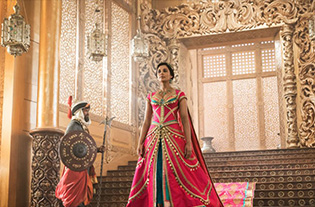

본문콘텐츠영역
ABOUT
Aladdin is a 2019 American musical fantasy film produced by Walt Disney Pictures. Directed by Guy Ritchie, from a script he co-wrote with John August, it is a live-action/CGI adaptation of Disney's 1992 animated film of the same name, which itself is based on the eponymous tale from One Thousand and One Nights. The film stars Mena Massoud, Will Smith, Naomi Scott, Marwan Kenzari, Navid Negahban, Nasim Pedrad, Billy Magnussen, and Numan Acar, as well as the voices of Alan Tudyk and Frank Welker, the latter of whom reprises his roles from all previous media. The plot follows Aladdin, a street urchin, as he falls in love with Princess Jasmine, befriends a wish-granting Genie, and battles the wicked Jafar.
Aladdin, a street urchin in the Arabian city of Agrabah, and his monkey Abu meet Princess Jasmine, who has snuck away from her sheltered life in the palace. Jasmine wishes to succeed her father as Sultan, but is instead expected to marry one of her royal suitors, including the charming yet dimwitted Prince Anders. Jafar, the grand vizier, schemes to overthrow the Sultan and seeks a magic lamp hidden in the Cave of Wonders, but only "the diamond in the rough" can enter the cave.
CHARACTERS
- ALADDIN
- An impoverished but kind-hearted Agrabah thief and street urchin who is in love with Princess Jasmine. Massoud said that Aladdin "sees a future for himself that's greater than what's been se t out for him at the present moment.
- JASMINE
- The Sultan's daughter and the feisty princess of Agrabah who wants to have a say in how she lives her life a nd falls in love with Aladdin. Scott said that the character "will be strong and have fun, but also get it wrong and be emotional.
MOVIE
Trailer OST-

Disney's Aladdin Official Trailer
Walt Disney Studios -
Disney's Aladdin Official Trailer
Walt Disney Studios -

Disney's Aladdin Official Trailer
Walt Disney Studios -
Disney's Aladdin Official Trailer
Walt Disney Studios
GALLERY
A kind-hearted street urchin and a power-hungry Grand Vizier vie for a magic lamp that has the power to make their deepest wishes come true.